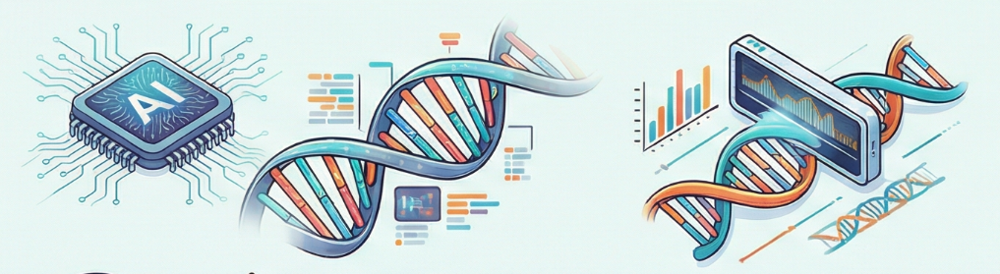
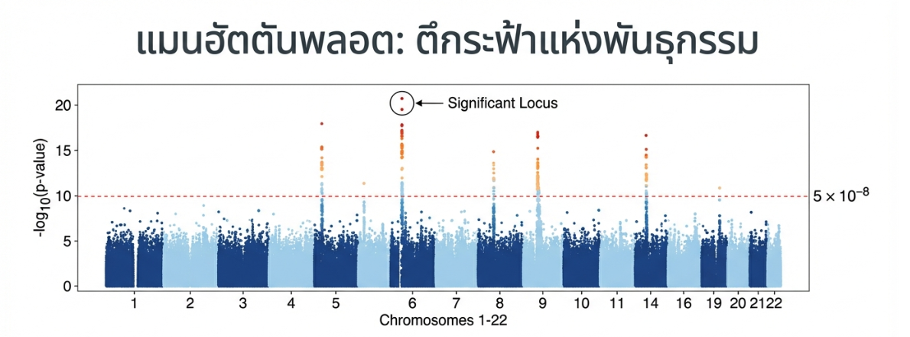

🧬 AI และ Machine Learning กับข้อมูลพันธุกรรม (Genomic)
อธิบายแบบง่ายๆ ว่า AI ช่วย “เก็บ” และ “วิเคราะห์” ข้อมูล DNA อย่างไร เพื่อช่วยคัดกรองความเสี่ยงโรค เลือกยาที่เหมาะกับแต่ละคน และพัฒนาการแพทย์แม่นยำ (Precision Medicine)
🧬 DNA📊 Genomic Data🤖 AI/ML💊 Precision Medicine🔒 ความปลอดภัยข้อมูล📊 Big Data🧬 GWAS
🧬 1) ข้อมูลพันธุกรรมคืออะไร?
ข้อมูลพันธุกรรม (Genomic data) คือข้อมูลจาก DNA ซึ่งเปรียบเหมือน “คู่มือการสร้างร่างกาย”
ที่บอกว่าแต่ละคนมีลักษณะทางชีวภาพอย่างไร และอาจมีความเสี่ยงโรคบางชนิดมากน้อยแค่ไหน
ปัจจุบันสามารถเก็บตัวอย่างเพื่ออ่านข้อมูล DNA ได้จากเลือด น้ำลาย ชิ้นเนื้อ หรือเซลล์มะเร็ง แล้วใช้เครื่องมือถอดรหัสพันธุกรรม (Sequencing)
เพื่อแปลงเป็นข้อมูลดิจิทัลจำนวนมาก
ทำไมข้อมูลนี้ถึง “ใหญ่” มาก?
3,000,000,000+
ตัวอักษรใน DNA ต่อคน (โดยประมาณ)
มหาศาล
ข้อมูลดิบจากการถอดรหัสพันธุกรรมต่อเคส
สรุป: DNA = รหัสชีวิต, Genomic data = ข้อมูลดิจิทัลที่ได้จากการอ่าน DNA
🤖 2) AI / Machine Learning คืออะไร?
AI (Artificial Intelligence) คือระบบที่ช่วยวิเคราะห์และตัดสินใจจากข้อมูลได้คล้ายมนุษย์
ส่วน Machine Learning (ML) คือวิธีทำให้คอมพิวเตอร์ “เรียนรู้จากข้อมูลจำนวนมาก” แล้วค้นหารูปแบบที่ซ่อนอยู่
ถ้าเปรียบเทียบง่ายๆ: คนทั่วไปดูข้อมูล DNA ทีละส่วนอาจใช้เวลานานมาก แต่ ML สามารถเปรียบเทียบ “หลายล้านจุด” พร้อมกัน
แล้วสรุปความสัมพันธ์ได้รวดเร็ว
💡 AI ทำได้ดีเมื่อ
ข้อมูลมีจำนวนมากและซับซ้อน
ต้องการหา “รูปแบบ” หรือ “ความสัมพันธ์” ที่มนุษย์มองไม่เห็นง่ายๆ
ต้องการช่วยคาดการณ์ เช่น ความเสี่ยงโรค หรือการตอบสนองต่อยา
⚙️ 3) AI วิเคราะห์ข้อมูลพันธุกรรมได้อย่างไร? (ขั้นตอนแบบเข้าใจง่าย)
🔬 เก็บตัวอย่างและถอดรหัสพันธุกรรม
เช่น เลือด/น้ำลาย → อ่าน DNA ด้วยเครื่อง Sequencing → ได้ข้อมูลดิจิทัล
📋 จัดระเบียบข้อมูลให้พร้อมใช้งาน
คัดกรองคุณภาพ, แปลงให้อยู่รูปแบบมาตรฐาน, ระบุ “ตำแหน่งที่ต่างจากคนส่วนใหญ่” (variants)
🧠 ให้ ML เรียนรู้จากตัวอย่างจำนวนมาก
เช่น เรียนรู้จากคนที่ “เป็นโรค” เทียบกับ “ไม่เป็นโรค” เพื่อหาว่า variant แบบไหนสัมพันธ์กับโรค
🎯 นำไปทำนาย/จัดกลุ่ม/ช่วยตัดสินใจ
เช่น คาดการณ์ความเสี่ยงโรค, แนะนำยาที่เหมาะสม, แบ่งกลุ่มผู้ป่วยตามลักษณะโมเลกุล
ตัวอย่างคำถามที่ AI ช่วยตอบได้:
“ยีนหรือการกลายพันธุ์แบบไหน เพิ่มความเสี่ยงโรค?”
“ผู้ป่วยรายนี้น่าจะตอบสนองต่อยากลุ่มไหนได้ดีกว่า?”
“มะเร็งชนิดนี้มีลักษณะโมเลกุลเข้ากับกลุ่มย่อยใด?”
📊 Big Data และ GWAS
ข้อมูลพันธุกรรมจากคนจำนวนมากจัดเป็น Big Data เพราะมีปริมาณมหาศาลและซับซ้อน
การวิเคราะห์ให้ได้ประโยชน์ต้องใช้เครื่องมืออย่าง GWAS (Genome-Wide Association Study)
🔬 GWAS คืออะไร?
GWAS คือการนำพันธุกรรมของคนจำนวนมากมาเปรียบเทียบกัน ระหว่างกลุ่มที่เป็นโรค กับกลุ่มที่ไม่เป็น
เพื่อค้นหาว่า จุดไหนในยีนที่เกี่ยวข้องกับการเกิดโรค
🌳 เปรียบเหมือนสังเกตต้นไม้ในวัด GWAS ก็คือการสังเกตแบบนี้ แต่สังเกตที่ระดับพันธุกรรม — ว่าคนที่ป่วยมี “จุดร่วม” อะไรในรหัสพันธุกรรมที่เหมือนกัน

ตัวอย่างผลวิเคราะห์ GWAS (Manhattan plot) — จุดที่สูงขึ้นแสดงตำแหน่งในจีโนมที่อาจสัมพันธ์กับโรค
🤖 GWAS กับ AI ในปัจจุบัน
ปัจจุบัน GWAS ใช้ AI ช่วยวิเคราะห์ ทำให้สามารถมองเห็นความเชื่อมโยงของยีนหลายจุดพร้อมกัน
และนำผลมาสร้าง คะแนนความเสี่ยงทางพันธุกรรม (Polygenic Risk Score) เพื่อทำนายโอกาสเกิดโรคของแต่ละบุคคลได้
GWAS
เปรียบเทียบกลุ่มป่วย vs ไม่ป่วย หาจุดในยีนที่สัมพันธ์โรค
Polygenic Risk Score
คะแนนรวมจากหลายจุดในยีน → ทำนายความเสี่ยงโรค
✨ 4) ประโยชน์ที่คนทั่วไปจะได้
🔍 คัดกรองความเสี่ยงโรค ก่อนมีอาการ (เช่น บางโรคทางพันธุกรรม)💊 การแพทย์แม่นยำ เลือกการรักษาให้เหมาะกับแต่ละคน🎯 มะเร็ง ช่วยเลือกยาที่ตรงเป้าหมาย (Targeted therapy) ในบางกรณี🔬 ช่วยงานวิจัย ค้นพบตัวบ่งชี้ใหม่ๆ (biomarkers) เพื่อพัฒนาแนวทางรักษา
แก่นสำคัญ: AI ไม่ได้แทนแพทย์ แต่เป็น “ผู้ช่วย” ที่ทำให้การวิเคราะห์ข้อมูลจำนวนมากเร็วและเป็นระบบขึ้น
⚠️ 5) ทำไมต้องระวัง? (ความเป็นส่วนตัวและข้อจำกัด)
ข้อมูลพันธุกรรมเป็นข้อมูลส่วนบุคคลที่สำคัญมาก
📌 ข้อจำกัดที่ควรรู้
AI ต้องใช้ข้อมูลคุณภาพดี และจำนวนมากพอ
ผลลัพธ์ “เป็นการประเมินความเสี่ยง” ไม่ใช่คำทำนาย 100%
ต้องมีผู้เชี่ยวชาญช่วยแปลผล (แพทย์/นักพันธุศาสตร์/นักชีวสารสนเทศ)
หมายเหตุ: หากเว็บไซต์ให้ข้อมูลสุขภาพ ควรมีข้อความกำกับว่าเป็นข้อมูลเพื่อความรู้ ไม่ใช่การวินิจฉัย และแนะนำให้พบแพทย์เมื่อมีอาการ
📝 6) สรุปแบบสั้นมาก
DNA คือ “รหัสชีวิต” ของเรา ส่วน AI/ML คือ “ผู้ช่วยอัจฉริยะ” ที่เก่งเรื่องการดูข้อมูลจำนวนมาก
เมื่อนำมารวมกัน จะช่วยให้แพทย์และนักวิจัยเข้าใจความเสี่ยงโรค เลือกการรักษาที่เหมาะกับแต่ละคน และพัฒนาการแพทย์แม่นยำได้ดีขึ้น